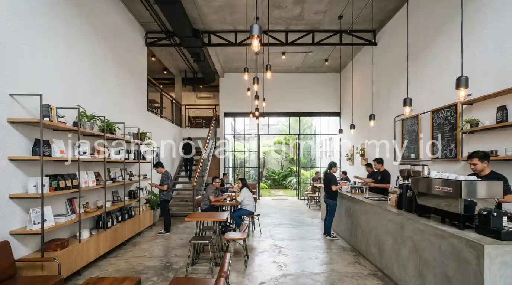

Jasa renovasi ruko Bogor yang profesional memahami karakter cuaca dengan curah hujan tinggi di kawasan tersebut, sehingga selain fit-out interior dan perbaikan fasad, aspek waterproofing dan sistem drainase juga menjadi perhatian khusus agar ruko tetap awet dan nyaman digunakan sepanjang tahun.
Ruko lama yang terlihat kusam akibat kelembapan dan air hujan sering kali membutuhkan penanganan lebih menyeluruh dibanding sekadar renovasi estetika biasa.
Apa Saja Cakupan Layanan Renovasi Ruko yang Biasa Dibutuhkan di Kawasan Bogor?
Cakupan layanan renovasi ruko di Bogor umumnya mencakup perbaikan fasad yang sudah lapuk akibat kelembapan, fit-out interior sesuai kebutuhan bisnis, serta penguatan sistem waterproofing pada area atap dan dinding luar.
Beberapa layanan yang biasa ditawarkan untuk renovasi ruko di kawasan ini:
- Perbaikan fasad yang mengalami pengelupasan cat akibat kelembapan udara yang tinggi.
- Fit-out interior sesuai kebutuhan bisnis, seperti kafe, toko retail, atau kantor kecil.
- Perkuatan sistem waterproofing pada dak beton atau atap agar tidak bocor saat musim hujan.
- Perbaikan sistem drainase di sekitar bangunan untuk mencegah genangan air pada musim hujan.
Bagi pemilik yang ingin memperbarui tampilan fasad ruko, referensi mengenai jenis atap rumah untuk iklim tropis juga relevan diterapkan pada bangunan komersial seperti ruko, mengingat prinsip ketahanan terhadap curah hujan tinggi pada dasarnya serupa.
Bagaimana Proses Fit-Out Interior untuk Kebutuhan Penyewa atau Usaha Baru?
Proses fit-out interior ruko di Bogor pada dasarnya mengikuti tahapan umum seperti diskusi kebutuhan fungsional, penyusunan denah tata ruang baru, hingga pemasangan instalasi sesuai jenis usaha yang akan beroperasi.
Tahapan umum proses fit-out interior ruko:
- Diskusi kebutuhan ruang berdasarkan jenis usaha, misalnya kafe, toko, atau kantor kecil.
- Penyusunan denah tata ruang baru termasuk posisi partisi dan area sirkulasi pengunjung.
- Pemasangan instalasi listrik, plafon, dan lantai sesuai standar operasional usaha.
- Finishing interior seperti pengecatan, signage, dan pencahayaan sesuai identitas brand penyewa.
Sebelum masuk ke tahap fit-out, sebaiknya anggaran keseluruhan sudah dipetakan lebih dulu menggunakan prinsip serupa dengan panduan estimasi RAB renovasi rumah, agar tidak ada pembengkakan biaya di tengah proyek renovasi ruko.
Apa yang Perlu Diperhatikan Saat Renovasi Ruko di Kawasan dengan Curah Hujan Tinggi Seperti Bogor?
Perhatian utama saat merenovasi ruko di kawasan dengan curah hujan tinggi adalah memastikan sistem waterproofing, kemiringan atap, dan saluran drainase dirancang dengan baik agar tidak terjadi kebocoran atau genangan air di kemudian hari.
Beberapa hal yang perlu diperhatikan:
- Pastikan material fasad yang dipilih tahan terhadap kelembapan tinggi dan tidak mudah berjamur.
- Perkuat sistem talang air dan pastikan kemiringannya cukup untuk mengalirkan air hujan dengan lancar.
- Gunakan cat eksterior dengan lapisan anti jamur khusus untuk kawasan dengan kelembapan tinggi.

Kesalahan Umum Saat Merenovasi Ruko di Kawasan Lembap dan Curah Hujan Tinggi
Kesalahan yang paling sering terjadi adalah hanya memperbaiki tampilan fasad tanpa menangani akar masalah kelembapan yang menyebabkan cat cepat mengelupas dan dinding berjamur.
Kesalahan lain yang perlu dihindari:
- Mengabaikan sistem waterproofing pada dak beton yang sudah berusia lama.
- Tidak memperbaiki saluran drainase yang tersumbat sebelum melakukan finishing fasad baru.
- Memilih material fasad murah tanpa mempertimbangkan ketahanannya terhadap kelembapan jangka panjang.
Pada akhirnya, renovasi ruko di kawasan dengan curah hujan tinggi seperti Bogor membutuhkan penanganan yang menyeluruh, bukan sekadar mempercantik tampilan fasad semata.
Tim jasa renovasi ruko profesional kami siap membantu mulai dari konsultasi awal hingga serah terima, dan Anda bisa mempelajari detail layanan renovasi ruko kami sebelum memulai konsultasi.

Ainur Reza
Penulis Profesional & Praktisi Konstruksi
Ainur Reza adalah seorang penulis profesional yang memiliki ketertarikan mendalam pada dunia arsitektur dan konstruksi. Dengan pengalaman bertahun-tahun mengamati tren renovasi rumah, ia aktif membagikan panduan praktis, tips RAB, dan wawasan seputar material bangunan untuk membantu pemilik rumah mewujudkan hunian impian mereka dengan anggaran yang efisien.